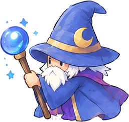

◀ あたやさいさいゲームランド
★★
この漢字の部首は？ぶしゅクイズ

海 の 部首は？ ―― 「さんずい」！
部首の なまえを 自分で 入力して 答えよう。えらぶより むずかしいぞ！
どの組に ちょうせん する？1回 10問（すくない組は ぜんぶ）
むずかしさ
部首（ぶしゅ）は、漢字を 形で なかま分け するときの 目じるしの パーツです。つく 場所で 7つに 分けられます。
こたえかた：部首の なまえを ひらがなで 入れて「こたえる」（または Enter）。ローマ字（sanzui）でも OK です。
よび方が 2つ ある 部首は、どちらでも 正かい（しんにょう／しんにゅう など）。
まちがえると ヒントが 1つずつ 出ます（①場所 → ②形と なかまの漢字 → ③はじめの字）。3回 まちがえると こたえが 出ます。
ヒントなしで 当たると 3点、ヒント1つで 2点、2つ以上で 1点。
きろくは この端末の ブラウザの中だけに のこります。
のこり 10

この漢字の 部首は？部首の なまえを 入れてね